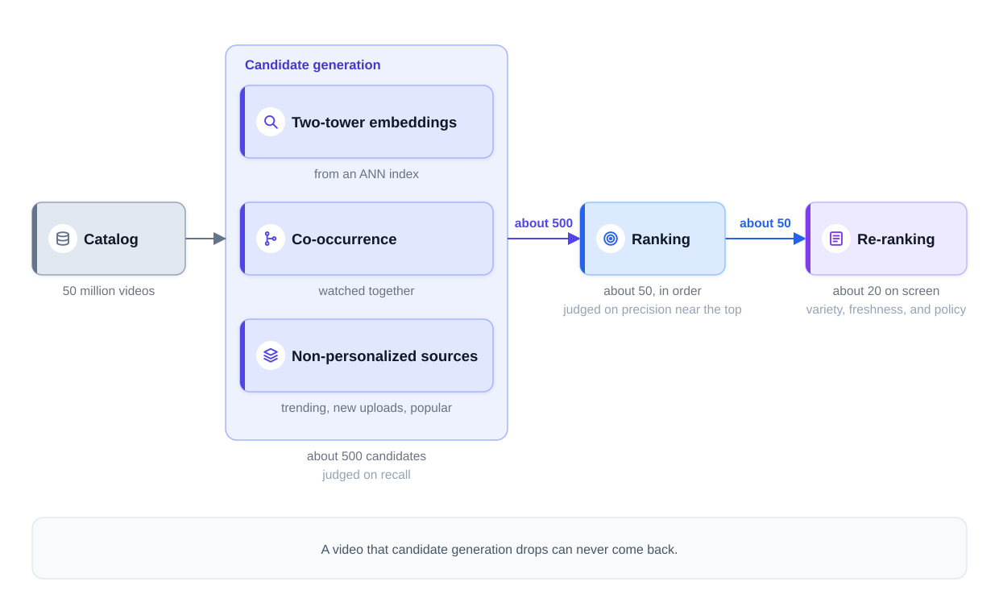
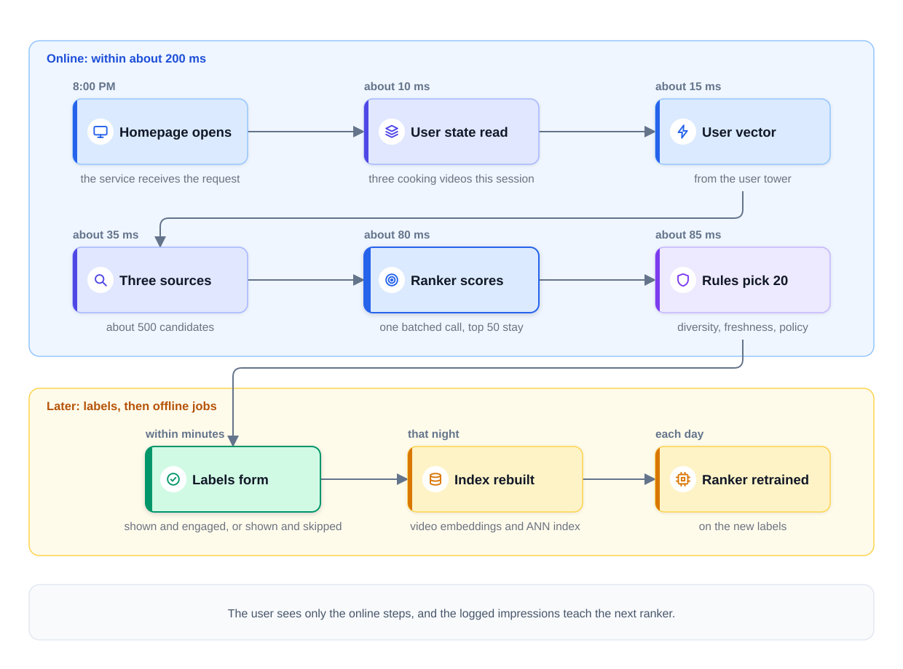

0% completed
Design a Recommendation System
On This Page
Know the Vocabulary
Part 1: Frame the Problem
Start With the Numbers
Why One Model Cannot Do It
The Funnel
Part 2: Define Success
Online Truth and Offline Proxies
One Metric per Stage
What Offline Numbers Decide
Part 3: Map the Data
Impressions Become Labels
Two Flaws in Impression Labels
Features and Freshness
Part 4: Pick the Model
Start With a Baseline
Three Candidate Sources
The Ranker
The Re-Ranking Rules
Part 5: Design the Serving Path
Two Planes
Follow One Request
Precompute or Compute per Request?
Fail Soft, Not Loud
Part 6: Keep It Working
Three Update Speeds
Cold Start: The New User
Cold Start: The New Item
Fixing Position Bias
The Proxy Trap
The Feedback Loop
Log Every Stage
Vetting a New Candidate Source
Part 7: Count the Costs
Memory for the Embeddings
Scoring Volume
What Breaks
Part 8: Using This in an Interview
Part 9: Common Mistakes
Mistake 1: Opening With the Model
Mistake 2: One Metric for the Whole Funnel
Mistake 3: Treating Clicks as Truth
Mistake 4: Putting the Rules Inside the Model
FAQs
Key Takeaways
Check Your Understanding
Know the Vocabulary
This lesson uses the terms below many times. Read them once now, and come back here when a later section needs one.
- Recommendation system: A system that picks items for one user from a large catalog, such as the videos on a homepage.
- Catalog: Every item the system could show. In this lesson, the catalog is 50 million videos.
- Impression: One video shown to one user, in one slot on the screen, at one time.
- Engagement: What a user does with an impression, such as clicking it and watching for a while.
- Funnel: A series of stages that turns a very large set of items into a short list. Each stage keeps fewer items and spends more effort on each one.
- Candidate generation: The first stage of the funnel. It quickly pulls a few hundred possible videos out of the whole catalog. It is also called retrieval.
- Ranking: The second stage. A heavier model scores each candidate and sorts them.
- Re-ranking: The last stage. Rules adjust the final list for reasons such as variety, freshness, and policy.
- Embedding: A short list of numbers that describes a user or an item. Items the model treats as similar get similar numbers.
- Two-tower model: A model with two parts. One part turns a user into an embedding, and the other turns an item into an embedding.
- ANN index: ANN stands for approximate nearest neighbor. An ANN index is a search structure that finds the closest embeddings quickly, but not always the exact closest ones.
- Co-occurrence: How often two items are used by the same people within a short time. "People who watched this also watched that" is co-occurrence.
- Recall@K: Of the videos a user really engaged with, the share that appears among the top K candidates.
- AUC: A score that measures ordering. It is the chance that the model scores a random positive example above a random negative one. A score of 0.5 is chance, and 1.0 is a perfect order.
- Cold start: The problem of recommending for a new user, or recommending a new item, when there is no history yet.
- Position bias: The effect of a slot on engagement. Videos near the top get more clicks partly because more people look there.
Part 1: Frame the Problem
Start With the Numbers
An interviewer says, "Design a recommendation system for a video platform." Do not start with a model. Start with the scale, because the scale decides the shape of the design.
Ask for three numbers, or state them as assumptions. The numbers below are illustrative assumptions for this lesson.
- Items: 50 million videos in the catalog.
- Users: 100 million daily users.
- Latency budget: the homepage must load its recommendations within about 200 ms.
The screen shows about 20 videos, so the system must choose 20 out of 50 million for each user in about 200 ms.
Then name the known system and the scope. "This is a recommendation system, so I will use a retrieve-then-rank funnel. I will design the homepage feed for signed-in users. Search, ads, and creator tools are out of scope." Then check that the scope matches what the interviewer wants.
Why One Model Cannot Do It
Suppose one accurate model scored every video for every request. Even at one microsecond per video, 50 million videos take 50 seconds, against a budget of 200 ms.
A model that is cheap enough to score 50 million videos is too simple to rank them well. A model that ranks well is too slow to score them all. No single model is both good enough and cheap enough at this scale. So the design splits the work into stages.
The Funnel
The funnel has three stages. The counts are examples.
- Candidate generation narrows 50 million videos to about 500. It runs three cheap sources at the same time, which Part 4 explains.
- Ranking scores those 500 with a heavier model and keeps the best 50, in order.
- Re-ranking applies rules to those 50 and picks the 20 that appear on screen.
The funnel works like hiring for one job. A recruiter skims thousands of resumes quickly and keeps a few hundred. That is candidate generation. A hiring team interviews a short list in depth and orders them. That is ranking. The final choice also follows company rules, such as budget and team balance. That is re-ranking. In both cases, fast checks come first and careful checks are saved for the few that remain.
The diagram below shows the three stages, the count after each one, and the metric that judges each stage.

Notice one rule of the funnel. A video that candidate generation drops can never come back. Ranking can only sort what it receives. The module introduction explains why a dropped video costs more than a video that is ranked too low.
Part 2: Define Success
Online Truth and Offline Proxies
The business cares about long-term outcomes. Two common ones are the daily return rate and watch time per session. The daily return rate is the share of users who come back the next day. It measures retention, which means users keep using the product.
These outcomes are the online truth, but a model cannot train on them directly. Retention is slow, and it does not belong to any one impression. Nobody can say which video made a user return tomorrow.
So the model trains on a faster signal: engagement with each impression. Did the user click the video and watch it for a while? That signal is a proxy, meaning a stand-in for the real goal. It is useful because it arrives within minutes. It is risky because it can rise while the real goal falls, as Part 6 shows.
One Metric per Stage
Each stage has a different job, so each stage gets its own offline metric.
| Stage | Job | Offline metric |
|---|---|---|
| Candidate generation | Keep the good videos | Recall@K |
| Ranking | Put the best videos first | AUC, plus precision near the top |
| Re-ranking | Apply variety, freshness, and policy | Rule checks, such as creator repeats per page |
Candidate generation is judged on recall. Take a later week of logs that training never saw. For each user, list the videos they really watched. Recall@K asks what share of those videos appears among the top K candidates, such as the top 500. Low recall means good videos were dropped before ranking.
Ranking is judged on its ordering, and most of all on precision near the top. AUC checks the overall ordering. An AUC of 0.5 means the order is no better than chance, and 1.0 means every positive is above every negative. Precision near the top asks a narrower question. Of the 20 videos at the top, how many did the user engage with? The user sees only that top part, so it matters most.
Offline Evaluation: Choosing the Metric explains these metrics in more depth.
What Offline Numbers Decide
Good offline numbers do not launch a model. They earn the model a live A/B test. An A/B test shows the new model to a random group of users and the current model to another group. The test then compares the online metrics, such as daily return rate and watch time per session.
Name guardrail metrics too. A guardrail metric is a number that must not get worse, such as the rate of "not interested" clicks or page latency. Online Experiments and A/B Testing covers how such a test is run.
Finally, state the system targets. Recommendations load within about 200 ms at a high percentile. If any stage fails, the page still shows videos. These are example targets, not guarantees.
Part 3: Map the Data
Impressions Become Labels
A label is the answer a model should learn for one past example. Here, the labels come from the impression logs.
Every time the homepage shows a video, the system logs an impression. The log row records the user, the video, the slot, the time, and the features used to rank it. Later events join that row: a click, the watch time, a "not interested" click.
The rule that turns logs into labels is simple.
- Shown and engaged is a positive example. For example, the user clicked and watched at least 30 seconds.
- Shown and skipped is a negative example. The video was on screen, and the user did not engage with it.
A skip is a weaker signal than a watch. The user may have scrolled past without looking at the video. The 30-second threshold is an example. Each product chooses its own definition of engagement and checks it against the online goals.
Two Flaws in Impression Labels
Labels built only from impressions have two flaws. Name both in an interview.
1. They cover only shown videos. The system has labels only for videos it chose to show. It knows nothing about the millions it never showed. So the model learns from its own past choices.
2. They carry position bias. A video in the first slot gets more clicks than the same video in the tenth slot. Part of that difference comes from the slot, not the video. A model trained on raw clicks partly learns "the top slot is good" and repeats yesterday's order.
Part 6 gives the standard fixes. Where Training Data Comes From explains label sources in general.
Features and Freshness
The ranker reads three groups of features. A feature is one input value that the model uses.
| Group | Examples | How fresh |
|---|---|---|
| User | languages, topics watched this month, videos watched this session | session features within seconds |
| Video | length, age, creator, recent click rate | engagement counts within minutes |
| User and video together | has the user watched this creator before, the two-tower similarity score | computed at request time |
Notice that freshness differs by group. A video's topic rarely changes, but a user's interests in this session can change with every click.
Part 4: Pick the Model
Start With a Baseline
The simplest working system shows the most-watched videos of the last day in the user's region. It is the same for everyone in that region. It is cheap and reliable, and it gives every later model a number to beat. It also becomes a fallback in Part 5.
Three Candidate Sources
Candidate generation does not use one method. It runs three sources in parallel, then merges their results. Each source can find videos that the others miss.
1. Two-tower embeddings. A two-tower model learns a short embedding vector for each user and each video. Training places them so that similar ones sit close together, and a user sits close to the videos that user is likely to enjoy. The two towers meet only at the final comparison, so a video's vector never depends on the user. That is why every video vector can be computed offline and stored in an ANN index. At request time, the system computes one user vector and asks the index for the nearest few hundred videos.
An ANN index trades exactness for speed. Comparing one user vector with all 50 million video vectors would take too long. The index finds near matches fast, even though it sometimes misses the exact closest video. One common index type is HNSW, which links each vector to some of its near neighbors. Embeddings and Two-Tower Retrieval explains how the towers train and serve.
2. Co-occurrence. A nightly job counts which videos the same users watch within a short time. For each video, it stores a list of its most frequent partners. At request time, the system looks up the lists for the user's last few watched videos.
3. Non-personalized sources. These lists are the same for everyone in a group. Examples are trending videos in the user's region, new uploads, and popular videos in the user's language. They give new users something to see, and they let new videos enter the funnel.
The merge step removes duplicates, removes videos the user already watched, and removes videos the user is not allowed to see. About 500 candidates remain.
The Ranker
The ranker scores each of the 500 candidates with the features from Part 3. A good first ranker is a gradient-boosted tree model, a model built from many small decision trees. It is fast and works well with mixed features. Move to a neural network when the data is large and an experiment shows a real gain.
The ranker predicts engagement, such as the chance of a click followed by a meaningful watch. Many rankers also predict expected watch time and combine the predictions in one weighted score. Design Feed Ranking shows how to combine many predictions.
The Re-Ranking Rules
The last stage is a layer of rules, kept outside the ranking model. Common rules include these.
- Diversity: no more than two videos from one creator on a page.
- Freshness: a few slots for recent uploads.
- Policy: remove videos that are not suitable for this user, such as age-restricted content.
- Editorial pins: a video the product team chooses for a fixed slot, such as coverage of a major live event.
Why keep these as rules? Product teams can change a rule without retraining the model. A rule change takes effect at once, and a person can read exactly what it does. If diversity lived inside the model, every change would need new training data, a new model, and a new test.
Part 5: Design the Serving Path
Two Planes
The design has an offline plane and an online plane. The offline plane runs background jobs. It builds the video embeddings, the ANN index, the co-occurrence lists, and the ranker. The online plane answers each homepage request while the user waits.
Follow One Request
The steps below follow one homepage request. The times are illustrative and count from the moment the request arrives.
Step 1: The homepage opens. At 8:00 PM, a user opens the app. This evening, the user already watched three cooking videos. The recommendation service receives the request.
Step 2: The user state is read (about 10 ms). The service reads the user's features, including the three videos watched this session.
Step 3: The user vector is computed (about 15 ms). The user tower turns those features into one embedding.
Step 4: Three sources run in parallel (about 35 ms). The ANN index returns its nearest videos. Co-occurrence returns partners of the three cooking videos. The non-personalized source returns trending videos in the user's region. The merge step keeps about 500 candidates.
Step 5: The ranker scores (about 80 ms). The service fetches features for all 500 candidates. The ranker scores them in one batched call, which takes roughly 20 to 40 ms. Scoring them one at a time would cost far more. The top 50 stay, in order.
Step 6: The rules pick 20 (about 85 ms). The re-ranking rules apply diversity, freshness, and policy. Twenty videos remain.
Step 7: The page is sent and logged. The response leaves well inside 200 ms. The remaining time covers the network and slow cases. When the page appears, each of the 20 videos is logged as an impression.
Step 8: Labels form later. Within minutes, each impression gets its label: shown and engaged, or shown and skipped. That night, the video embeddings and the ANN index are rebuilt. Each day, the ranker is retrained on the new labels.
The diagram below shows the same steps. In the online band, the first box shows the clock time, and each later time counts from the moment the request arrives.

Notice the split. The user sees only the online steps, and the logged impressions teach the next ranker.
Notice also where the time goes. The ranker is the largest single cost, so it gets a fixed budget. The three sources run at the same time, so the slowest source sets their total time.
Precompute or Compute per Request?
Some systems precompute candidates for each user overnight and only reorder them at request time. That saves work, and it is a common choice for a shelf where tastes change slowly. But it misses what the user did this evening. It also misses videos uploaded after the job ran. This homepage retrieves per request, because this session changes what the user wants. Batch vs Online Inference explains this trade-off.
Fail Soft, Not Loud
To fail soft means to keep working in a reduced way when a part breaks. The homepage must never show an error because one stage failed, so plan each failure in advance.
| What fails | What users see |
|---|---|
| The nightly index build breaks | The last validated index keeps serving. It is a day old, but it works. |
| The ranker times out | A fallback order, such as the candidates sorted by recent popularity |
| The whole service is down | A cached list of trending videos for the user's region |
So users see a stale index or a fallback order, never an error. Tag every degraded response in the logs, so that its impressions do not mislead the next training run. Model Serving Basics covers fallbacks and timeouts in general.
Part 6: Keep It Working
Three Update Speeds
Different parts of the system change at different speeds, so they update on different schedules. The cadences below are examples.
| Part | Update cadence | Why |
|---|---|---|
| User short-term state | Within the session, in seconds | Interests change with each click |
| Video embeddings and ANN index | Nightly, with new uploads added during the day | Video content changes slowly |
| Ranker | Retrained daily | Each day adds many new labels, and a training run takes hours |
One rule ties the video index to the user tower. A user vector and a video vector can only be compared if the same version of the towers made them. So when the towers retrain, the new user tower and the new index go live together.
This gives two tiers of freshness. The fast tier is the in-session update, where each click changes the user's session features within seconds. The next page load then reflects that click. The slow tier is full retraining of the ranker, a daily job that runs overnight. The system personalizes in real time without retraining the model after every event.
Cold Start: The New User
A new user has no history, so the two-tower model has nothing to build a useful user vector from.
The fix is to fall back to popularity and trends, then learn fast in the session. The first page shows trending and popular videos for the user's region and language. Every click updates the session features at once. By the second or third page load, the funnel has real signals to use.
Cold Start: The New Item
A new video has zero views, so co-occurrence cannot find it, and its engagement features are empty.
Two things solve this. First, content features. The title, description, thumbnail, and creator give the video tower enough to compute an embedding before the first view. This works only if the video tower reads content features. A tower that learns from the video's ID alone has nothing to use for a new video. The video is added to the ANN index during the day, without waiting for the nightly build. Second, a small exploration boost. A small, controlled share of impressions goes to new videos, and their engagement fills in the missing data. A product may also add a row of new uploads from creators the user follows.
Fixing Position Bias
Two standard fixes reduce position bias.
1. Position as a feature, set to a fixed value at serving. In training, the slot number is one of the features. The model can then explain part of each click by the slot. At serving, every candidate gets the same slot value, such as zero. The model then compares videos as if they all sat in the same place.
2. Propensity weighting. A propensity is the estimated chance that a user looks at a given slot. Clicks in rarely seen slots get more weight in training, and clicks in the top slot get less. Teams often estimate these chances with small, controlled experiments that change the order.
Neither fix is perfect. The position feature assumes that a slot affects every video in the same way. Propensity estimates can be wrong, and very large weights make training unstable, so teams limit them. Validate the fix with an A/B test.
The Proxy Trap
The proxy trap happens when the system improves the proxy while the real goal gets worse.
If you optimize only for clicks, the system rewards clickbait. A video with a misleading thumbnail gets the click and loses the viewer. If you optimize only for watch time, the system rewards long, padded videos that hold attention without being worth it.
Guard against both. Combine several signals in the ranker's target, such as a click plus a meaningful watch. Track satisfaction surveys and "not interested" rates as guardrails. Let the A/B test decide on retention, not on clicks.
The Feedback Loop
The system shows videos, users react to what they see, and the ranker retrains on those reactions. Popular videos get shown more, so they collect more positive labels, so they get shown even more. Over time, the feed can narrow to a small set of videos.
Exploration and the diversity rules slow this down. Monitor how many distinct videos and creators receive impressions each day. Monitoring, Drift, and Retraining covers feedback loops in more detail.
Log Every Stage
Log the funnel one stage at a time. For each video, record which source retrieved it, its rank position, whether it was shown, and whether it was watched. These logs answer the most common debugging question. Was a good video never retrieved, or was it retrieved and then ranked too low?
Vetting a New Candidate Source
Suppose a teammate proposes a fourth source, such as "videos from channels your friends follow." Do not judge it on its own recall. It may only find videos the other sources already find.
Measure its marginal value instead, meaning what it adds beyond the current sources. Run it in shadow mode first: it retrieves on live requests, and its results are logged but not shown. Count how many of its candidates are new, and how many the ranker would place in the top 20. If it adds value, run a small A/B test. Only a win there earns it a permanent slot.
Part 7: Count the Costs
Memory for the Embeddings
Store one vector per video. Assume 128 numbers per vector and 4 bytes per number.
50,000,000 videos x 128 x 4 bytes = 25.6 billion bytes, or about 25.6 GB.
That is the raw vectors alone. The ANN index adds its own links between vectors, and the exact amount depends on its settings. The index is held in memory, often split across several machines and copied to more machines to handle traffic and failures. A re-embedding of all 50 million videos runs as a batch job whenever the video tower changes.
Scoring Volume
Assume each daily user opens the homepage 3 times a day.
- 100 million users x 3 loads = 300 million requests per day.
- 300 million / 86,400 seconds = about 3,500 requests per second on average.
- At a peak of twice the average, about 7,000 requests per second.
- Each request scores 500 candidates, so about 1.75 million scores per second on average.
Batching all 500 candidates into one call keeps this affordable. Benchmark the ranker on real hardware before choosing machines.
The logs grow fast as well. Each request shows 20 videos, so 300 million requests create about 6 billion impression rows per day, each with its features. Plan their storage and retention before you promise daily retraining.
What Breaks
Close with the top risks and the response to each.
- The proxy trap: clicks or watch time rise while retention falls. Response: blended targets, guardrails, and A/B tests decided on retention.
- The feedback loop: the feed narrows to popular videos. Response: exploration and diversity rules.
- A failed stage: the index build or the ranker breaks. Response: the last validated index and a fallback order.
Part 8: Using This in an Interview
The 30-second answer: "With 50 million videos and a 200 ms budget, no single model can score everything, so I will use a funnel. Three sources run in parallel: two-tower embeddings from an ANN index, co-occurrence, and trending videos. They narrow the catalog to about 500 candidates. A ranker scores those in one batch and keeps about 50. A rule layer applies diversity, freshness, and policy and shows about 20. Labels come from impressions, with position bias corrected. Recall@K judges retrieval and AUC judges the ranker, but only an A/B test on retention and watch time launches a model. The ranker retrains daily, the index rebuilds nightly, and session state updates in seconds."
Likely follow-ups:
- "Why not skip the funnel and use one model for everything?" No model is both good enough and cheap enough at this scale. Scoring 50 million videos per request with a strong model would take far longer than 200 ms. The funnel spends cheap effort on many videos and careful effort on a few.
- "Offline recall looks fine, but users say the feed feels boring. Where do you look?" Look first at the re-ranking layer and the objective, because diversity has likely collapsed there. Good recall suggests that retrieval still finds the videos users watch. So the variety is probably lost later. A diversity rule may have been loosened, or the ranker's target may reward the same kind of video again and again.
- "How would you adapt this design to an online store's 'customers also bought'?" Co-occurrence becomes the central source, because the question is about items bought together. Purchases replace watch time as the main label. Purchases are rare, so views and add-to-cart events may support them. The funnel and the cold-start fixes stay.
Part 9: Common Mistakes
Mistake 1: Opening With the Model
A weak answer opens by naming a model architecture. A strong answer opens with the scale: 50 million videos against a 200 ms budget. That one sentence explains why the funnel exists.
Mistake 2: One Metric for the Whole Funnel
Retrieval and ranking have different jobs, so one number cannot judge both. Judge retrieval on recall and ranking on precision near the top, and let the online test decide the launch.
Mistake 3: Treating Clicks as Truth
Clicks exist only for videos the system chose to show, and they carry position bias. Name both flaws and the fixes before the interviewer asks.
Mistake 4: Putting the Rules Inside the Model
Diversity, freshness, and policy belong in a separate rule layer. Inside the model, every rule change would need new training and a new test.
FAQs
Q: Does every recommendation system need a two-tower model?
No. A small catalog can be scored in full, with no ANN index. The two-tower model is worth its cost when the catalog is too large to score item by item.
Q: Is co-occurrence still useful when there is a two-tower model?
Yes. Co-occurrence captures "watched together" patterns directly from the logs. It is cheap to build, easy to explain, and can find videos that the embeddings miss.
Q: Does setting the position feature to zero at serving remove position bias completely?
No. It reduces the bias, but it assumes that a slot affects every video in the same way. Propensity weighting has its own limits. Both need an online test to confirm that they help.
Q: Should the ranker retrain after every click?
No. Retraining is a slow job that runs once a day, overnight. Fast personalization comes from session features that update within seconds, so the model stays the same while its inputs change.
Key Takeaways
- The scale decides the shape. Fifty million videos and a 200 ms budget rule out one model, so the design uses a funnel.
- The funnel has three stages. Candidate generation narrows to about 500, ranking to about 50, and re-ranking to about 20 on screen.
- Each stage has its own metric. Retrieval is judged on recall, and ranking on precision near the top. Offline wins earn an A/B test, not a launch.
- Impression labels are useful but flawed. They cover only shown videos and carry position bias, so the design corrects for both.
- Updates run at three speeds. Session state updates in seconds, the index rebuilds nightly, and the ranker retrains daily.
- The homepage fails soft. A stale index or a fallback order replaces any failed stage.
- In a system design interview, open with the numbers and draw the funnel with its three sources. Then name the label flaws, cold start, the proxy trap, the fallbacks, and the memory estimate.
The next lesson, Design Feed Ranking, keeps this funnel but changes the candidates. They become posts from the people a user follows, with several kinds of reactions to weigh at once.
Check Your Understanding
1. Why does the design use three funnel stages instead of one strong model?
Show answer
Because no model is both good enough and cheap enough at this scale. A strong model cannot score 50 million videos within 200 ms. Cheap candidate generation narrows the catalog first, so the strong ranker scores only about 500 videos.
2. A video in the first slot gets three times more clicks than in the tenth slot. Why can't the model treat all those clicks as proof that the video is better?
Show answer
Because of position bias. Part of the extra clicks comes from the slot, since more people look at the top. The standard fixes are position as a feature with a fixed value at serving, or propensity weighting.
3. A creator uploads a new video. How can it reach any homepage before anyone has watched it?
Show answer
Through content features and a small exploration boost. The title, description, thumbnail, and creator give it an embedding, and it is added to the index during the day. A small share of impressions then goes to new videos so that engagement data can build up.
4. The nightly index build fails. What does the user see on the homepage?
Show answer
Normal recommendations from yesterday's index. The last validated index keeps serving. It is a day old, but it works. Users never see an error because a background job failed.
0 Comments
No comments yet. Be the first to start the discussion!
Reading Progress
0%
On This Page
Know the Vocabulary
Part 1: Frame the Problem
Start With the Numbers
Why One Model Cannot Do It
The Funnel
Part 2: Define Success
Online Truth and Offline Proxies
One Metric per Stage
What Offline Numbers Decide
Part 3: Map the Data
Impressions Become Labels
Two Flaws in Impression Labels
Features and Freshness
Part 4: Pick the Model
Start With a Baseline
Three Candidate Sources
The Ranker
The Re-Ranking Rules
Part 5: Design the Serving Path
Two Planes
Follow One Request
Precompute or Compute per Request?
Fail Soft, Not Loud
Part 6: Keep It Working
Three Update Speeds
Cold Start: The New User
Cold Start: The New Item
Fixing Position Bias
The Proxy Trap
The Feedback Loop
Log Every Stage
Vetting a New Candidate Source
Part 7: Count the Costs
Memory for the Embeddings
Scoring Volume
What Breaks
Part 8: Using This in an Interview
Part 9: Common Mistakes
Mistake 1: Opening With the Model
Mistake 2: One Metric for the Whole Funnel
Mistake 3: Treating Clicks as Truth
Mistake 4: Putting the Rules Inside the Model
FAQs
Key Takeaways
Check Your Understanding